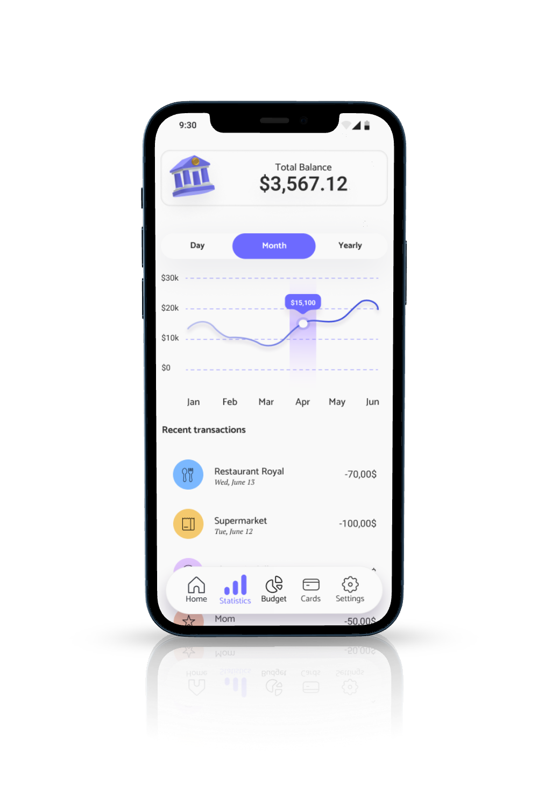
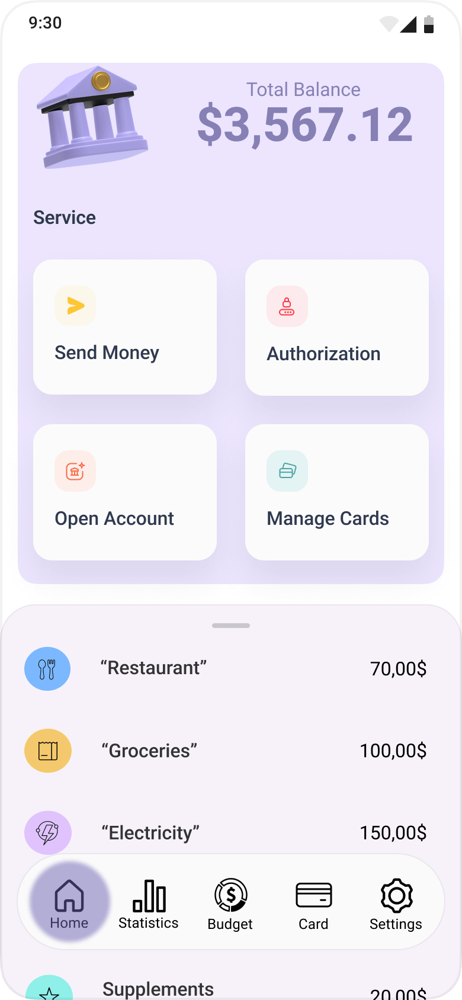
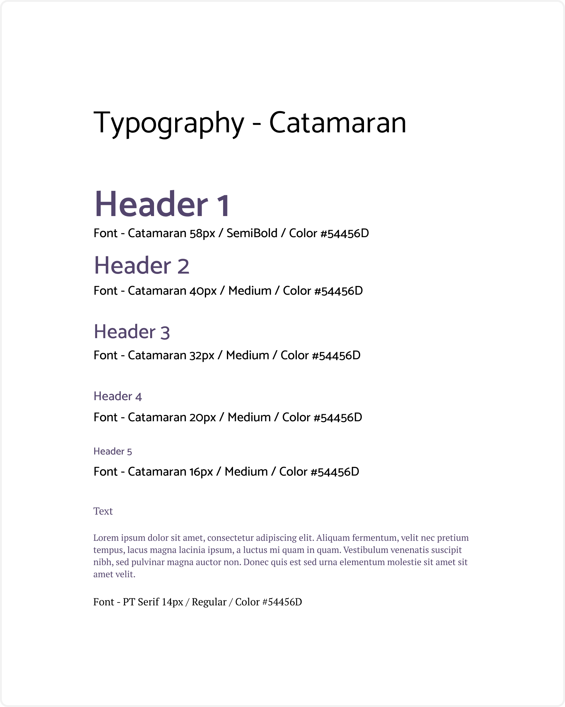
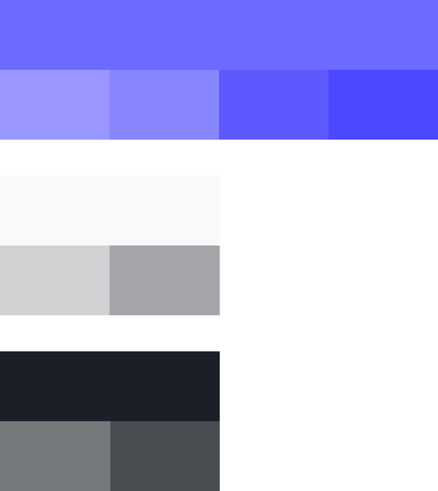
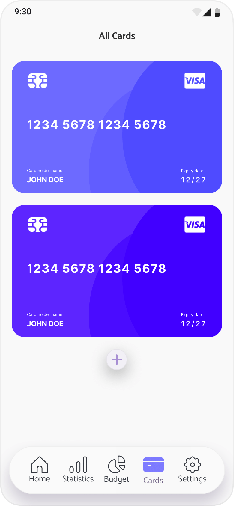

Project overview
NanoPay, a banking app designed to help users transfer, split, budget and invest money. Since this is my first project the goal was to learn the UX Design process and learn how to apply the knowledge into future projects and bring value to my team. There were many challenges along the way, and the longest part was recruiting people for user interviews and testing. I worked part-time for 3 months on this project.
All methodologies:
- Competitive analysis
- User interviews and surveys
- User personas
- User journeys
- User flows
- Mobile-first design
- Information architecture
- Sitemap
- Usability heuristics
- Rapid prototyping
- Low-High fi prototyping
- Usability testing
- Grid fundamentals
- Design language system
- Accessibility
Problem statement
NanoPay users need an app that will effortlessly and reliably transfer money, and to help users control their money with budgeting features. We will know this to be true when users will use the app without bugs while also limiting their spending.
Potential solution
The app will be made with all the basic user needs on the front and the advanced options on different pages to tone down information intake for users who only want to transfer money. The app will notify the user about its budgeting features in app but will not force them onto the user.
User interview results
After conducting user interviews, these are the most important takeaways that would affect the app:
User personas
I made 2 personas based on data from user interviews, Donna and Mike. They have two different personalities and I would use them when creating a user flow to imagine how they would react while trying to complete a certain goal and to communicate my design decisions to the rest of the team if I was working with one. Get to know them in their profiles.
Sitemap creation
After creating personas I had to do some information architecture and created a base sitemap for building NanoPay. As for this being my first project I had no knowledge how to build a sitemap so the first version and the complete differentiate quite a bit. When I completed card sorting testing, the architecture was a success, but the app evolved and so did the sitemap. Nonetheless the complete one is easily navigatable.
"Final Sitemap"
Usability testing
I was testing the second version of NanoPay. I had 6 participants in my usability test to complete 3 tasks. The goal was to determine if the users could navigate through the app easily and to identify friction if there is any.
Afterwards, I presented the data findings in a affinity map and a rainbow spreadsheet. On the rainbow spreadsheet I have findings from the testing and possible solutions on the design with 4 categories:
 "Rainbow spreadsheet"
"Rainbow spreadsheet"
What I found from the test is that the participants liked the design and that they could save money through the app also.
They were users of different banking apps like Revolut and Transferwise.
I found that two out of six participants couldn't find a savings account at first. To fix this issue, I moved the savings account into the budget page.

Savings account in “Open Account”
Savings account in budgeting
NanoPay design language
Typography - Catamaran

Colors
Primary colors and Dark mode
We use primary colors for the tone of the app. Lighter and darker tones of purple are applied to illustrations and objects for effect. The darkest color is used for text. Second darkest is used for primary actions, while the lightest is used for secondary actions and floating buttons. White and black are used for background and shadowing. We use #E8EBE9 color in dark mode for less eye straining, primary dark as background and primary color as sub-tones.
I wont put more of the design language because the case study is getting lengthy.
High-fidelity wireframes
 Splash screen
Splash screen
Onboarding
 Login
Login
Dashboard
Statistics
Budget

Cards
Settings
What I learned
I learned that the users have very different views towards products and I should test the product on many different participants to get the best possible result. But if I don't find the people that are interested in the product they will most likely not give any informative feedback.